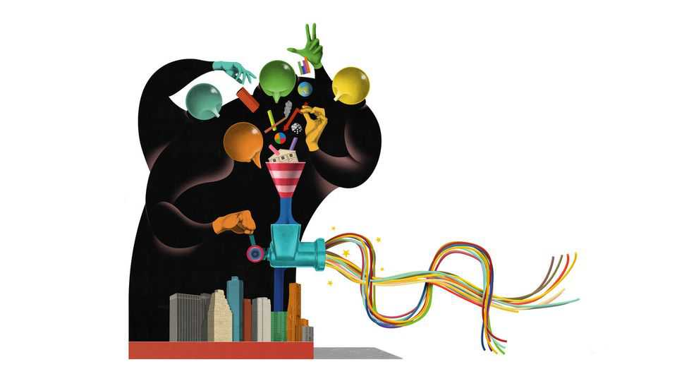

The era of speedball capitalism has dawned
A financial revolution is taking place in America

Oct 1st 2026
In the past year American markets have digested the largest-ever initial public offering (SpaceX), equity raise by a public company (Google) or a foreign firm (SK Hynix), private-funding round (OpenAI) and private-debt deal (Broadcom), as well as most of the biggest bond issue in history (Amazon). There was the first $1trn exchange-traded fund, or ETF (Vanguard), a record-breaking cash pile (Berkshire Hathaway) and stock-buyback programme (Nvidia), and the consummation of the largest-ever leveraged buyout (Electronic Arts). Then there are the enormous mergers in railways (Union Pacific and Norfolk Southern), utilities (NextEra and Dominion Energy) and media (Paramount and Warner Bros Discovery)—the last of which led, this week, to the largest ever junk-bond offering, beating a record set only last week (SoftBank). New markets have been created out of thin air (for compute) or become much bigger (for predictions). Worries about massive corporate scandals (First Brands) and hedge-fund blow-ups (Situational Awareness), which would have once occupied investors’ attention for months, are steamrollered by the relentless, totalising and extraordinarily flexible machine that is American finance.
The great powers of this system increasingly defy categorisation. Old distinctions—between the state and the market, individuals and firms, financial and non-financial firms, public and private markets, investment and gambling—have bent under their weight. What, for instance, is Nvidia? A company, certainly (the world’s most valuable); a venture-capital investor (arguably Silicon Valley’s most important); a source of American power (run by a showman with the ear of the president); and a lender, with plans to backstop loans made by the likes of Goldman Sachs and Apollo. And what, pray tell, are they? Goldman Sachs is best known for trading and giving advice on mergers, but increasingly resembles a giant asset manager, having just bought two firms that issue ETFs. And Apollo? Part life-insurer, part private-equity fund.
Every actor in the American economy is best understood by its position in the country’s wager on artificial intelligence. Maintaining the technological lead over China and keeping stock prices high are the main tasks of government; opposing government mostly involves opposing AI data centres. As in a war economy, the obligations of enterprise are ambiguous (bosses recently signed a “morally binding” accord on AI safety) and the balance-sheets of the biggest companies have been requisitioned for the cause. As well as borrowing heavily in bond markets, Amazon, Google, Meta and Microsoft have $2.4trn of binding spending commitments, mostly tied to data-centre projects, lurking in the footnotes of their financial reports—or “off balance-sheet”.
A much-chatted-about new paper by Stijn Van Nieuwerburgh of Columbia Business School calculates that if (an admittedly punchy) 183GW of new data-centre capacity is built by 2032, the capex bonanza will be larger, as a share of the economy, than America’s railway and dotcom booms combined. Spillovers are visible everywhere: in the $176bn order backlog of GE Vernova, which makes gas turbines, in the capital spending of big utility firms and in the earnings of banks, which arrange financing for data centres and grease the wheels of speculation. Each American’s patriotic duty is to keep spending: because of soaring stocks, household net worth is nearly 830% of disposable income, a record high. And keep betting: when a man is tired of American capital markets, he is surely tired of life itself.
All this brings to mind a speedball, that combination of heroin and cocaine popular among rock stars a generation ago. Anthropic’s listing would flood the market with shares. Its prospectus reportedly discloses 11-figure losses and discusses the end of the world. Hell of a downer. But its products are almost magical and its revenue grew 12-fold last year. Private-capital markets have consumed their own diametric cocktail. A slow-burning crisis over bad private-equity deals made when interest rates were low is happening at the same time (and at the same firms) as the explosion in lending to data centres. And, of course, America’s economy is running hot; so hot that yields on its government debt—which the political establishment seems less interested in controlling—have leapt to their highest level in more than two decades.
The rest of the world looks at America’s capital machine with awe and envy. Silicon Valley firms pitch up to raise record sums in foreign bond markets before disappearing like bandits, on to the next currency. European central bankers deliver absurd speeches in which they promise the virtues of the American system with none of its vices. In fact, they seem to have managed just about the opposite, having imported the less obviously productive parts of Wall Street, like private equity and nihilistic debt-restructuring techniques, and none of its truly useful bits, like securitisation or venture capital.
Those at the white-hot centre of it all now ask: “What might break?” This is a sly question, since anything “might break”; and the thing that actually “breaks” matters less than all the things that are almost broken when it does. Yet the queasy stories are piling up. It is hardly auspicious that the riskiest corners of the life-insurance market are coming under pressure for their private-credit investments when this great well of capital is needed most. Or that a firm should cry “force majeure” over foreseeable risks to its data-centre projects, as Oracle, a tech giant, is said to have done over a project in New Mexico. Or even that firms, presumably on their bankers’ advice, are postponing their listings, as Oura, a wearable-technology company, has done. Oura cited market “uncertainty”. Yet the market is within a hair of its all-time high. Better, maybe, to keep going while the machine still whirrs. ■